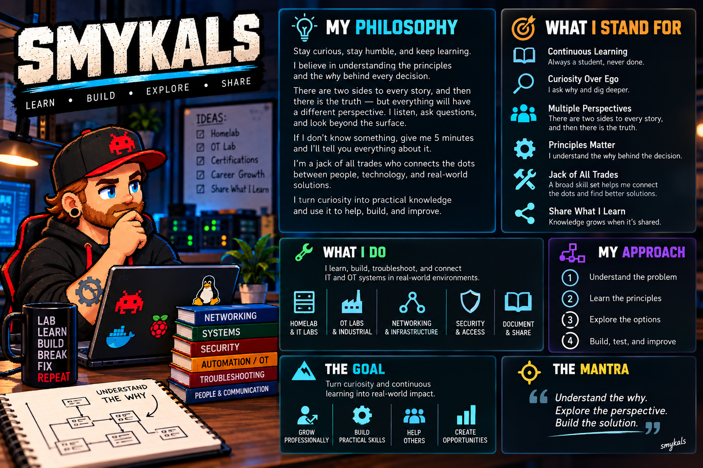

Technology is part of a bigger system.
Working across field services, enterprise support, and manufacturing has shaped how I approach technical problems. A system has to work for the people using it, the team supporting it, and the operation depending on it.
My experience with supervision and technical training also taught me to listen before jumping to an answer. Different perspectives can reveal a dependency, a confusing handoff, or a practical constraint that the technical symptoms alone do not explain.
Understand first. Then build and test.
A lab for following the next question.
My homelab began with networking and virtualization. As it grew, it gave me new questions about storage, remote access, workload placement, and how systems depend on one another.
Manufacturing IT, enterprise infrastructure, and technical leadership form my professional foundation. OT is a developing specialty: manufacturing has drawn my interest toward the control systems and industrial dependencies beyond the infrastructure I support. I am building a dedicated learning environment to explore how control systems fit together and how IT and OT meet. It is a place to experiment, make mistakes, and understand the consequences before applying the lessons elsewhere.
I like having a broad foundation while going deeper when a problem demands it. Connecting the network, the system, the process, and the people is what makes the work interesting to me.
Learn. Build. Explore. Share.
The pixel artwork brings some personality to the portfolio. It reflects the same curiosity and hands-on learning that drive the technical work.


I want this portfolio to show both the work and the thinking behind it: what I tried, what I learned, and what I would improve next.
Let's connect →